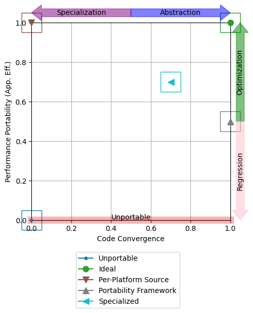

Note
Click here to download the full example code
Simple Navigation Chart¶
A simple navigation chart.
The point in the top-right corner represents the ideal, where an application achieves the best performance across all platforms of interest using a single source code.
The point in the top-left corner represents applications that achieve the best performance across all platforms of interest, but do so without reusing any code.
Any point along the x-axis represents an application which is unportable (i.e. there is at least one platform of interest where it does not run).
Real-life applications are expected to lie somewhere between these extremes.
A navigation chart is a useful way to visualize the trade-offs between performance (portability) and programmer productivity, assisting in navigation of the P3 space and reasoning about how to reach development goals.
import matplotlib.pyplot as plt
import pandas as pd
import p3
# Initialize synthetic data
# (not shown, but available in script download)
# Read performance portability and code divergence data into pandas DataFrame
pp = pd.DataFrame(pp_data)
cd = pd.DataFrame(cd_data)
# Generate a navigation chart
fig = plt.figure(figsize=(5, 5))
ax = p3.plot.navchart(pp, cd)
plt.savefig("navchart.png")
Total running time of the script: ( 0 minutes 0.176 seconds)